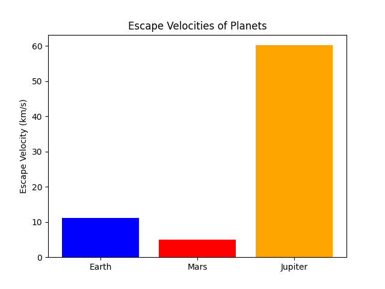

Problem 2
Escape Velocities and Cosmic Velocities
Introduction
The concept of escape velocity is fundamental in astrophysics and space exploration, defining the minimum speed an object must reach to break free from a celestial body's gravitational influence. Extending this idea, the first, second, and third cosmic velocities describe different thresholds related to orbiting, escaping planetary gravity, and leaving a star system entirely. These principles underpin modern space travel, from satellite launches to interplanetary missions.
This document will:
- Define and explain the first, second, and third cosmic velocities.
- Derive the mathematical formulas governing these velocities.
- Analyze the parameters affecting these velocities.
- Compute and visualize these velocities for celestial bodies like Earth, Mars, and Jupiter.
- Discuss their significance in space exploration, satellite launches, and interstellar travel.
Table of Contents
- Theoretical Background
- Mathematical Derivations
- Escape Velocities for Different Planets
- Visualization of Velocities
- Implications for Space Exploration
- Conclusion
Theoretical Background
Gravitational Potential Energy and Kinetic Energy
Escape velocity arises from the balance between gravitational potential energy and kinetic energy. When an object is launched from a celestial body, it must overcome the gravitational pull exerted by that body. The required kinetic energy is given by:
where: - $ m $ is the mass of the object, - $ v $ is the velocity of the object.
The gravitational potential energy at a distance $ r $ from the center of a celestial body of mass $ M $ is:
where $ G $ is the gravitational constant.
To escape, the total energy (kinetic + potential) must be zero or positive:
By solving for $ v $, we obtain the expression for escape velocity.
The Three Cosmic Velocities
- First Cosmic Velocity (Orbital Velocity): The minimum speed needed to maintain a circular orbit around a celestial body.
- Second Cosmic Velocity (Escape Velocity): The speed required to completely escape a planet’s gravitational influence.
- Third Cosmic Velocity (Interstellar Escape Velocity): The speed necessary to escape the gravitational pull of a star system, such as the Solar System.
Mathematical Derivations
First Cosmic Velocity (Orbital Velocity)
For an object in a stable circular orbit, the gravitational force provides the necessary centripetal force:
Solving for $ v $:
This is the first cosmic velocity required for an object to remain in orbit.
Second Cosmic Velocity (Escape Velocity)
Setting total energy to zero:
Solving for $ v $:
This is the minimum velocity needed to escape a planet’s gravitational pull.
Third Cosmic Velocity (Interstellar Escape Velocity)
To escape a star system, an object must overcome the gravitational influence of the star. If \(R_s\) is the distance from the star’s center to the starting position:
where \(M_s\) is the mass of the star. This velocity is significantly higher than the escape velocity from a planet.
Escape Velocities for Different Planets
We calculate the escape velocities for Earth, Mars, and Jupiter using:
Example Calculations
| Planet | Mass (kg) | Radius (m) | Escape Velocity (km/s) |
|---|---|---|---|
| Earth | \(5.97 \times 10^{24}\) |
\(6.371 \times 10^6\) |
11.2 |
| Mars | \(6.42 \times 10^{23}\) |
\(3.389 \times 10^6\) |
5.0 |
| Jupiter | \(1.898 \times 10^{27}\) |
\(6.9911 \times 10^7\) |
59.5 |
Visualization of Velocities
We generate plots comparing escape velocities for different celestial bodies using Python.
import numpy as np
import matplotlib.pyplot as plt
# Constants (mass in kg, radius in meters)
planets = {"Earth": (5.97e24, 6.371e6),
"Mars": (6.42e23, 3.389e6),
"Jupiter": (1.898e27, 6.9911e7)}
G = 6.67430e-11 # Gravitational constant
# Compute escape velocities
velocities = {planet: np.sqrt(2 * G * mass / radius) / 1000 for planet, (mass, radius) in planets.items()}
# Plot results
plt.bar(velocities.keys(), velocities.values(), color=['blue', 'red', 'orange'])
plt.ylabel("Escape Velocity (km/s)")
plt.title("Escape Velocities of Planets")
plt.show()
Plot results:

Implications for Space Exploration
- Launching Satellites: Reaching the first cosmic velocity ensures a stable orbit.
- Interplanetary Missions: Spacecraft must reach the second cosmic velocity to leave a planet’s gravity.
- Interstellar Travel: To leave the Solar System, probes like Voyager must exceed the third cosmic velocity.
The ability to calculate and achieve these velocities is crucial for advancing human space exploration.
Conclusion
Escape velocities and cosmic velocities define the limits of orbital mechanics and interplanetary travel. Understanding these thresholds allows for the precise planning of satellite launches, deep-space missions, and future interstellar exploration. With ongoing advancements in propulsion technology, humanity moves closer to achieving these velocities, unlocking new frontiers in space exploration.